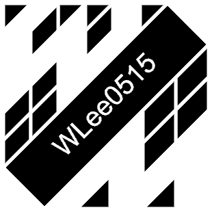

Greetings
Welcome to my personal page. As you might have suspected, I am WLee0515. I plan on providing a brief explanation of my projects through this page. I hope you will find it enjoyable.
Thank-you for dropping by
WLee0515
Welcome to my personal page. As you might have suspected, I am WLee0515. I plan on providing a brief explanation of my projects through this page. I hope you will find it enjoyable.
Thank-you for dropping by
WLee0515